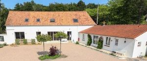
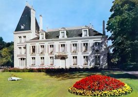

Recensement Jean-Claude Truffet
| Département | 62 — Pas-de-Calais |
| Canton | Montreuil sur mer |
| Commune | St-Josse |
| Type d'édifice | Château |
| Période d'origine | XVIII-XIX |
| Coordonnées GPS | 50° 28' 07" Nord, 1° 39' 56" Est |


Le MOULINEL Le château du Moulinel a pris le nom d'un hameau de Saint-Josse: Le Moulinet puis Le Moulinel. Il n'est pas encore représenté sur le cadastre napoléonien qui date de 1810 ni sur un Plan d'une partie des communes de la Madeleine-sous-Montreuil, Calotterie, Saint Josse, Cucq et Merlimont, formant une partie de la vallée de Canche... établi par Jean-Louis-Marie Triplet en décembre 1822 et conservé dans la série O des Archives départementales du Pas-de-Calais. Il est érigé au mitan du XIXe siècle. Jules Cozyn (1874-1953), propriétaire, fils d'un négociant de Montreuil-sur-Mer, hérite de la propriété de ses parents recensés au Moulinel entre 1881 et 1906. À la veille de la grande guerre, peu après son mariage avec la fille du receveur particulier des finances de l'arrondissement de Montreuil-sur-Mer, Geneviève de Brauer (1893-1988), il y conduit une campagne de travaux incluant l'érection de la tour qui permettait, par gravitation, la distribution d'eau dans le château. Orienté nord-sud, le château du Moulinel est implanté en retrait de la chaussée. Son accès principal se fait depuis la chaussée de l'Avant-Pays. La parcelle est fermée en son centre par un portail en fer forgé soutenu par deux pilastres de brique et, seulement à la droite de celui-ci, par une muraille de clôture encore en place, en brique coiffée de tuile. Vu depuis la chaussée, le château présente un corps de bâtiment principal de plan rectangulaire de cinq travées de façade sur deux niveaux. Il est rythmé par quatre pilastres, deux aux extrémités et deux sous le fronton triangulaire percé d'un oculus ovale coiffant l'axe central. Celui-ci est percé d'une porte à linteau en plein cintre constituant l'entrée. Un cordon horizontal divise la façade. Ce logis est encadré par deux ailes de plain pied prolongeant le rez-de-chaussée du corps de bâtiment principal: celle de l'ouest est percée de deux travées, celle de l'est de trois. Ces trois volumes sont couverts de toitures dardoises indépendantes à croupes dépourvues de lucarnes. Les maçonneries sont enduites. Lensemble est complété à l'Est par une tour circulaire coiffée d'une poivrière qui se dresse en retrait du pavillon latéral mais est relié aux deux niveaux du château.
SAINT-JOSSE édifié sur l'emplacement du monastère dont la destruction, entreprise sous la Révolution, s'acheva au début du XIXe siècle. Au centre de sa grille d'entrée, deux pylônes coiffés par des pots à feu donnent accès à sa cour d'honneur. Il comprend un corps de logis rectangulaire et sur la gauche, une tour carrée, plus élevée que lui d'un étage, établie en retrait du seul côté de la cour. Les deux façades de l'édifice sont simples. Les angles sont traités en bossage. Deux portes cintrées forment les axes du corps de logis; celle de la cour donne accès au vestibule d'où part l'escalier celle regardant vers le jardin correspond à la salle à manger; en façade principale une autre porte ouvre sur le salon ménagé au rez-de-chaussée de la tour. Le corps principal de logis est coiffé d'un toit agrémenté de chaque côté de trois lucarnes; celles du centre sont dotées d'un fronton cintré et les autres d'un fronton triangulaire. Un épi de faîtage couronne cette toiture comme celle, à quatre versants et très élancée, qui coiffe la tour carrée. Au-delà d'une pelouse ombragée par un hêtre, un pont enjambe un ruisseau qui limite la forêt dépendant de la propriété. L'architecte qui a bâti cette demeure était à l'évidence nourri de culture néo-classique; des détails comme les épis de faîtage, le haut comble de la tour accosté de deux très hautes cheminées . Manoir du TERTRE; chambres d'hôtes.
Moulinel famille de Jean-Louis-Marie Triplet"
Trois châteaux dans cet article le Moulinel, st-Josse et le Tertre Tertre et Moulinel GPS : 50° 28' 07" Nord, 1° 39' 56" Est